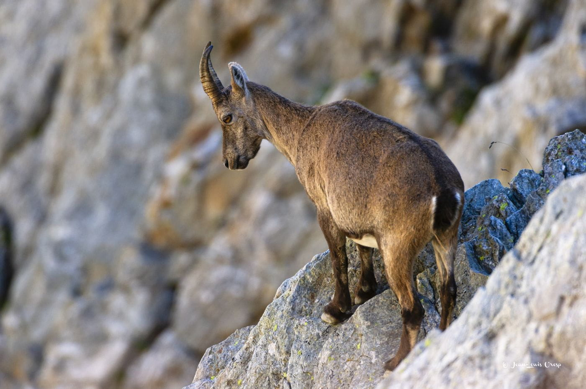

Questa è la tua guida per Parco del Gran Paradiso
Il Parco Nazionale del Gran Paradiso, istituito nel 1922, è il più antico parco nazionale italiano. Si estende per oltre 70.000 ettari tra la Valle d'Aosta e il Piemonte, abbracciando un territorio di straordinaria bellezza alpina. La vetta più alta è il Gran Paradiso stesso, con i suoi 4.061 metri, l'unico quattromila interamente in territorio italiano.
Nato come riserva reale di caccia di Vittorio Emanuele II per proteggere lo stambecco dall'estinzione, oggi il parco è un modello di conservazione ambientale e un santuario per una delle faune alpine più ricche e preziose d'Europa.
Attività per i visitatori
Il Parco del Gran Paradiso offre oltre 500 chilometri di sentieri segnalati, adatti a escursionisti di tutti i livelli. Il Rifugio Vittorio Emanuele II, situato a 2.732 metri, è uno dei punti di partenza più suggestivi per l'ascesa alla vetta del Gran Paradiso, una delle cime più ambite dagli alpinisti di tutto il mondo.
Il Colle del Nivolet (2.612 metri) offre panorami mozzafiato sui ghiacciai e rappresenta un punto di accesso privilegiato per osservare gli stambecchi nel loro habitat naturale. In inverno, le valli del parco si trasformano in un paradiso per gli amanti delle ciaspole, dello sci di fondo e delle escursioni in slitta tra paesaggi innevati da cartolina.

Ghiacciai e paesaggi alpini
Il Parco del Gran Paradiso è un regno di ghiacciai millenari, laghi alpini e vallate profonde. Il Lago del Nivolet e il Lago di Lillet riflettono le cime circostanti creando scenari di rara bellezza. I prati alpini esplodono di colori durante la breve estate, con fioriture di genziane, stelle alpine, campanule e rododendri che tingono di rosa le pendici più soleggiate.
Fauna emblematica
Lo stambecco (Capra ibex) è il simbolo indiscusso del parco, con oltre 4.000 esemplari che popolano l'area protetta. Accanto a lui vivono il camoscio alpino, la marmotta che fischia sui prati estivi, la lepre variabile, l'aquila reale e il gipeto, reintrodotto con successo dopo l'estinzione locale. I boschi ospitano il gallo forcello, il francolino di monte e il picchio nero.

Botanica e cultura alpina
Un patrimonio botanico unico
Le vallate del parco custodiscono una ricchezza botanica straordinaria. Il giglio martagone, con i suoi fiori rosa maculati, cresce nei boschi di latifoglie, mentre il papavero alpino tinge di giallo le pietraie più soleggiate. La rara Nigritella nigra, un'orchidea di montagna dal profumo intenso di vaniglia, fiorisce nei prati umidi tra giugno e luglio.
Un patrimonio storico e culturale
I villaggi di Cogne, Valsavarenche, Rhêmes-Notre-Dame e Noasca conservano l'autenticità della cultura alpina, con baite in pietra e legno, antichi sentieri mulattieri e tradizioni secolari. La festa della Devétéya, celebrazione della transumanza, mantiene vivo il legame tra comunità locali e territorio, con riti antichi e prodotti tipici come fontina, formaggi d'alpeggio e il pane di segale.

Come visitare
Accessi principali: Il parco è facilmente raggiungibile dalla Valle d'Aosta (Aosta, Cogne, Valsavarenche) e dal Piemonte (Ceresole Reale, Locana, Noasca). I centri visita offrono informazioni e guide qualificate per le escursioni.
Stagionalità: L'estate è ideale per trekking e alpinismo, con i sentieri accessibili da giugno a settembre. L'inverno offre paesaggi innevati perfetti per ciaspole, sci di fondo e fotografia naturalistica. La primavera e l'autunno regalano spettacoli di fioriture e colori unici.
Consigli: Si raccomanda di pernottare nei rifugi alpini per vivere l'esperienza completa della montagna e di affidarsi a guide esperte per le escursioni in alta quota.
Conservazione e ricerca
Modello di tutela ambientale: Il Parco Nazionale del Gran Paradiso è un modello internazionale per la conservazione della biodiversità alpina. La protezione dello stambecco, iniziata nel XIX secolo, ha permesso la salvezza di una specie sull'orlo dell'estinzione, oggi diffusa in tutte le Alpi.
Ricerca scientifica: Il parco collabora con università e centri di ricerca per monitorare gli ecosistemi, i cambiamenti climatici e la dinamica delle popolazioni animali. I programmi di educazione ambientale coinvolgono scuole e visitatori per diffondere la cultura della sostenibilità.
Turismo sostenibile: Il parco promuove un turismo responsabile, con iniziative di mobilità dolce, strutture eco-compatibili e attività che valorizzano le tradizioni locali e la produzione agroalimentare tipica.